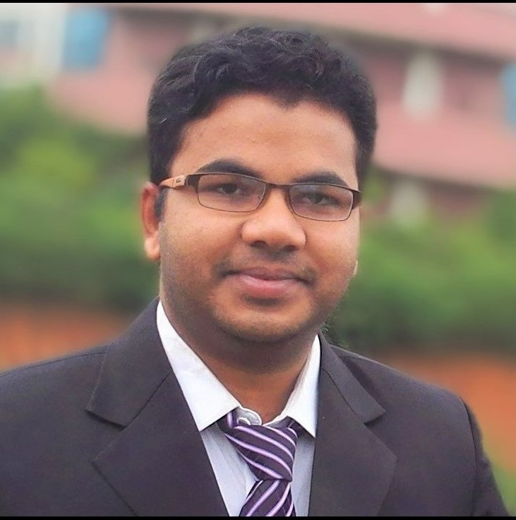

I am a Postdoctoral Research Scholar in the Department of Civil, Environmental, and Geodetic Engineering at The Ohio State University, where I work on the synthesis of reticular materials (MOFs and COFs) for the recovery of critical and rare earth elements from waste streams, including acid mine drainage.
My research sits at the intersection of advanced materials chemistry, wastewater treatment and resource recovery, and applied machine learning. I develop AI/ML frameworks — using ensemble methods such as ExtraTrees, XGBoost, and LightGBM — to accelerate the prediction and optimization of adsorbent performance across environmental contaminant systems including PFAS, heavy metals, and rare earth elements.
Previously, I was a Postdoctoral Research Associate at SUNY Albany, where I developed graphene, MOF, clay, and electrospun nanofiber-based materials for PFAS removal and destruction. I completed my PhD in Environmental Chemistry at the University of Salerno (Italy), with a visiting period at the Swedish Centre for Resource Recovery, University of Borås.
I am recognized as a Top 2% Scientist worldwide (Elsevier/Stanford, 2024) and received the 2024 ACS ES&T Water Best Paper Award. My work has generated over 5,380 citations with an h-index of 44.
| Apr 2026 | Conference Two abstracts submitted to ACS Fall 2026 in Chicago — REE recovery from acid mine drainage & ML-guided MOF screening. |
| Mar 2026 | Paper New paper published in ACS Omega — regenerable graphene nanoplatelet adsorbents for trace-level PFAS removal. |
| Feb 2026 | Paper Corresponding author paper published in ACS Applied Engineering Materials — PVA-based electrospun nanofiber membrane for PFAS adsorption. |
| Dec 2025 | Award Received the 2024 Best Paper Award from ACS ES&T Water. |
| Nov 2025 | New position Joined The Ohio State University as Postdoctoral Research Scholar. Project: MOFs/COFs for critical mineral recovery. |
| Aug 2024 | Award Featured in the Top 2% Scientists list by Elsevier and Stanford University. |
Total Citations: 5,380+ | h-index: 44 | i10-index: 107 | Updated: Apr 2026. Full list on Google Scholar.